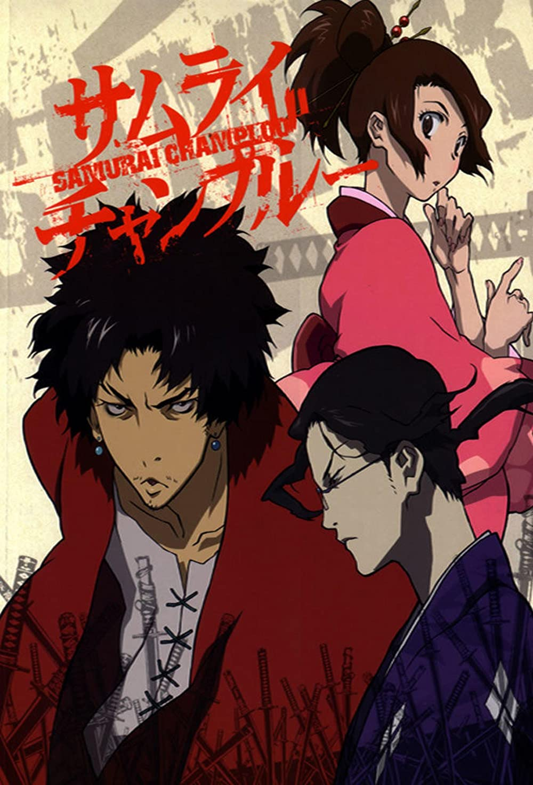
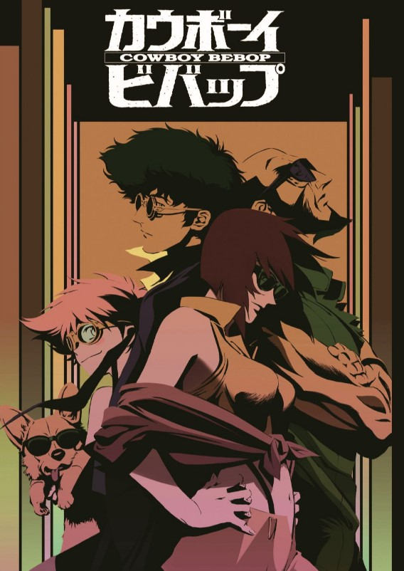
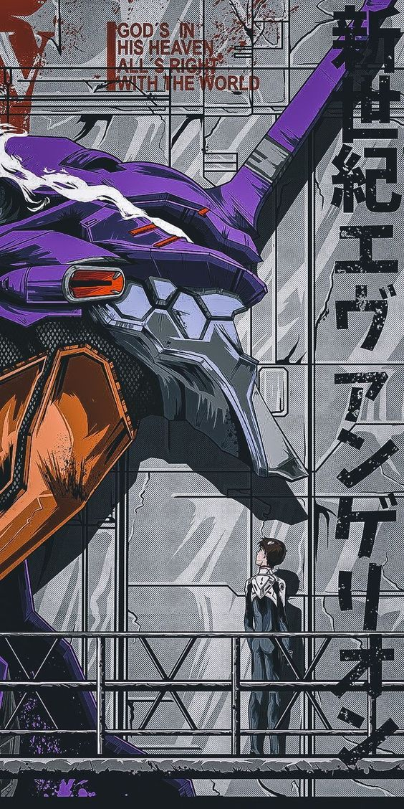
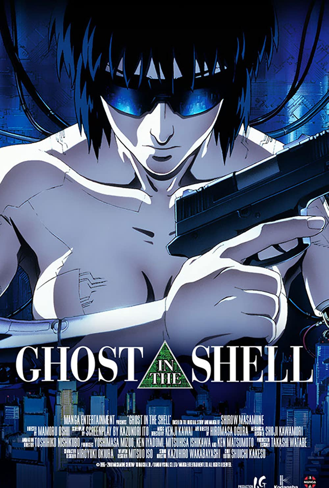
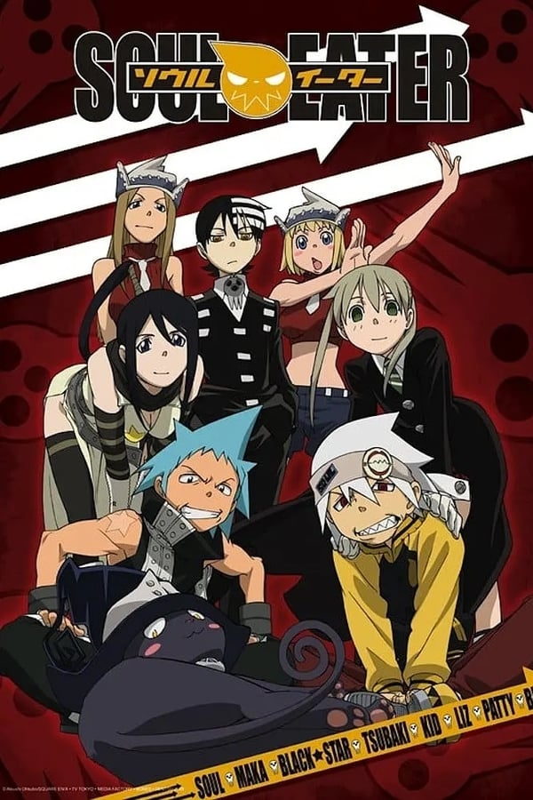
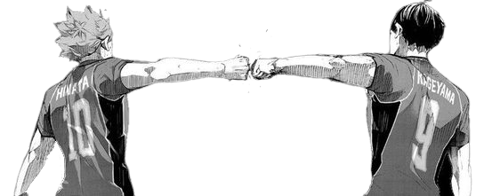

- 
- 
- 
- 
-

- 
Samurai Champloo
2005
26EP
Ação, Aventura, Comédia, Drama
A arte em Samurai Champloo é marcada por sua abordagem estilizada e vibrante. A série apresenta uma mistura de estilos visuais, desde cenas tradicionais do Japão feudal até elementos contemporâneos, como grafite e hip-hop. Essa combinação única de estilos cria uma estética visual cativante que se destaca na indústria do anime.
Os personagens de Samurai Champloo são visualmente distintos e memoráveis. Eles são retratados com traços e características expressivas que transmitem suas personalidades e emoções. Além disso, as cenas de ação são animadas de forma impressionante, com sequências de luta coreografadas que são fluidas e dinâmicas.
Outro aspecto importante da obra é a sua trilha sonora única. A série utiliza uma mistura eclética de música hip-hop e elementos tradicionais japoneses, criando uma atmosfera singular e contemporânea. Essa abordagem inovadora na escolha musical adiciona profundidade à experiência do espectador e contribui para a identidade única da obra.
Essa obra foi criada há
Cowboy Bepop
1999
26EP
Drama, Sci-fi
A arte em Cowboy Bebop é influenciada por uma mistura de estilos, incorporando elementos do cinema noir, do western, da ficção científica e do jazz. O design de personagens é marcante, com personagens únicos e visualmente interessantes. Cada personagem possui traços e características distintas que se destacam, desde o protagonista Spike Spiegel, com seu cabelo bagunçado e olhos afiados, até a elegante e misteriosa Faye Valentine. Os designs dos personagens são cuidadosamente desenvolvidos para transmitir suas personalidades e histórias.
A paleta de cores em Cowboy Bebop é rica e variada, contribuindo para a atmosfera única da série. As cores são utilizadas para criar diferentes climas e tonalidades em cada episódio. Por exemplo, algumas cenas são dominadas por tons quentes e terrosos, enquanto outras apresentam uma paleta mais fria e sombria. Essa variação visual ajuda a definir o tom das histórias contadas em cada episódio e a criar uma sensação de imersão para o espectador.
A atenção aos detalhes na animação contribuiram para uma experiência imersiva e emocionante com sua trilha sonora excepcional. Composta por Yoko Kanno, a música incorpora uma variedade de estilos musicais, incluindo jazz, blues e rock. A trilha sonora adiciona camadas de emoção e atmosfera à série, complementando perfeitamente as cenas e tornando-se um marco importante na indústria de animes. Se destacou também por sua narrativa não linear e complexa. A série apresenta uma estrutura episódica que se desenvolve gradualmente, combinando histórias de fundo dos personagens com eventos atuais. Essa abordagem inovadora permitiu uma exploração mais profunda dos protagonistas e suas motivações, impactando a forma como narrativas mais complexas foram subsequentemente abordadas em outros animes.
Essa obra foi criada há
Neon Genesis Evangelion
1995
26EP
Apocalítico, Drama psicológico
A arte de Evangelion se destacou pela sua originalidade e detalhamento minucioso, quebra de padrões convencionais de animação e o uso inovador da computação gráfica. Os Evas, robôs gigantes, apresentaram designs únicos, cheios de detalhes biomecânicos e características distintas. A série também abordou cenas de combate caóticas e intensas, aliadas a animações fluídas e coreografias de luta elaboradas, elevando a qualidade técnica dos animes da época.
Evangelion trouxe uma narrativa psicológica complexa e profunda, com personagens bem desenvolvidos e repletos de conflitos internos. A trama abordou temas existenciais, religiosos e filosóficos de forma ousada e provocativa, desafiando a compreensão do público e gerando debates fervorosos. Essa abordagem inovadora contribuiu para que os animes deixassem de ser vistos apenas como entretenimento infantil e ganhassem mais maturidade e profundidade temática.
A série inspirou diversas obras posteriores, tanto em animes como em outras mídias, gerando um subgênero específico conhecido como "mecha psicológico". Essa abordagem de narrativas complexas e simbolismo oculto se tornou uma referência para muitos criadores, que buscaram em Evangelion inspirações para suas próprias obras. Eva elevou a arte dos animes a um novo patamar, impactando a indústria de forma duradoura. Sua estética visual inovadora, narrativa complexa e temas provocativos abriram caminho para uma nova era de produções mais maduras e reflexivas.
Essa obra foi criada há
Ghost in the Shell
1995
1h 23m
Cyberpunk, Sci-fi
A arte de Ghost in the Shell é considerada revolucionária, apresentando um mundo cyberpunk meticulosamente detalhado e altamente imersivo. Os cenários urbanos futuristas são retratados com riqueza de detalhes e uma atmosfera sombria, criando uma sensação de realismo e profundidade que era rara na animação da época. O uso de cores e sombras adiciona uma dimensão visual única à obra, impactando a forma como os animes subsequentes abordaram a estética cyberpunk.A obra foi projetada com cuidado e realismo. Seus trajes, características físicas e expressões faciais são meticulosamente desenhados para transmitir suas personalidades e emoções. A protagonista Major Motoko Kusanagi é um exemplo notável, com seu visual icônico, cabelo curto e pele artificial.
A paleta de cores em Ghost in the Shell varia dependendo da cena e do contexto. As cenas urbanas são geralmente dominadas por tons escuros e frios, enquanto as cenas dentro do ciberespaço são frequentemente apresentadas em cores vibrantes e saturadas. Essa escolha de cores ajuda a estabelecer a atmosfera distinta e futurista do mundo da história.Os efeitos visuais avançados, como a integração de animação em computação gráfica, foram inovadores para a época e influenciaram a adoção de técnicas mais sofisticadas em produções futuras de animes.
Além da arte impressionante, também se destaca por sua narrativa complexa e temas filosóficos. A trama aborda questões sobre a natureza da consciência, identidade e inteligência artificial, proporcionando um enredo intelectualmente desafiador que ressoou com o público. Esse foco em temáticas mais profundas abriu caminho para uma abordagem mais madura e reflexiva em animes posteriores.
Essa obra foi criada há
Akira
1988
2h 4m
Cyberpunk, Ação, Sci-fi
A arte em Akira é uma obra-prima que deixou um impacto significativo na indústria de animes, revolucionando a arte e a narrativa do gênero. O filme é amplamente aclamado por suas técnicas de animação pioneiras e estilo visual inovador, tornando-se uma influência duradoura na produção de animações japonesas.
A estética visual de Akira é singular e inovadora. A cidade de Neo-Tokyo é retratada com riqueza de detalhes e atmosfera cyberpunk, com uma paleta de cores intensas e cenários futuristas. Os personagens foram desenhados com traços distintos e expressivos, tornando-os facilmente reconhecíveis. Essa originalidade estilística de Akira influenciou muitos outros animes que surgiram posteriormente. Foi pioneiro na utilização de técnicas de animação avançadas para a época. A animação foi elaborada em detalhes meticulosos, com cenas fluidas e dinâmicas que impressionaram o público e os críticos. A qualidade da animação em Akira estabeleceu novos padrões para a indústria e inspirou a adoção de técnicas mais sofisticadas em produções futuras.
Akira também se destacou pela sua narrativa madura e complexa. A trama abordou temas filosóficos e psicológicos, apresentando uma história sombria e repleta de simbolismos. A profundidade dos personagens e a exploração de questões existenciais foram inovadoras para a época e serviram de inspiração para animes posteriores que buscaram trazer narrativas mais profundas e envolventes.
Essa obra foi criada há
Soul Eater
2003
51EP
Aventura, Sobrenatural, Shonen
A arte em Soul Eater é conhecida por seus traços fortes, personagens exagerados e designs ousados. Os personagens são visualmente distintos, com características e estilos únicos. Cada um tem um design marcante que reflete sua personalidade e papel na história. Desde as roupas extravagantes até os penteados e acessórios excêntricos, a arte em Soul Eater é cheia de detalhes que a tornam memorável.
Outro aspecto notável da arte em Soul Eater são as armas humanas e os meisters. As armas humanas são personagens que têm a capacidade de se transformar em armas, enquanto os meisters são aqueles que as empunham. Essas transformações são representadas artisticamente com detalhes minuciosos e estilos únicos. Cada arma tem sua própria forma e estilo, desde lâminas afiadas até armas de fogo peculiares. A forma como essas transformações são visualizadas acrescenta uma dimensão extra à arte e à ação na série.
A criação de cenários e atmosferas envolventes. A série apresenta locações variadas, desde cenários sombrios e misteriosos até ambientes mais exuberantes e fantasiosos. Essa variedade de cenários contribui para uma experiência visual interessante e ajuda a estabelecer o clima adequado para a narrativa.
Essa obra foi criada há
Comunidade
Quer saber ainda mais sobre obras que mudaram o percurso dos animes? Se você é um verdadeiro apaixonado por animes, provavelmente já se perguntou quais são os tesouros que influenciaram gerações. Na AniArt, convidamos você, a embarcar em uma jornada inesquecível pelo mundo dos animes. Se torne membro dessa comunidade clicando aqui.
Números
Com base nos dados fornecidos pelo AniDB, apresentamos o número total 🔢 de animes listados até a data de corte dos registros:
FAQ
- Como ver os textos sobre as obras?
- Ao clicar na imagem do anime correspondente/ou clicar no nome do anime no menu sera mostrado uma descricao em relacao a arte do anime.
- Qual o propósito deste site?
- Destacar e celebrar a variedade e a qualidade da arte presente nesses programas de animação.
- Onde posso assistir?
- Há diversas opções disponíveis para assistir animes online. Uma maneira fácil de encontrar o que você procura é fazer uma simples pesquisa utilizando o termo "anime alvo + assistir online". Dessa forma, você encontrará sucesso em sua busca.
- Como foi selecionado esses animes?
- A seleção dos animes mencionados, como "Samurai Champloo", "Cowboy Bebop", "Ghost in the Shell" e "Soul Eater", foi feita com base em sua popularidade, influência e impacto na indústria de animes ao longo dos anos. Esses animes são amplamente considerados obras aclamadas e representativas do meio.